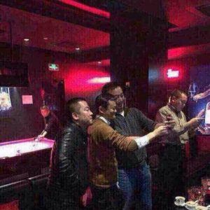
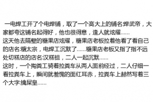
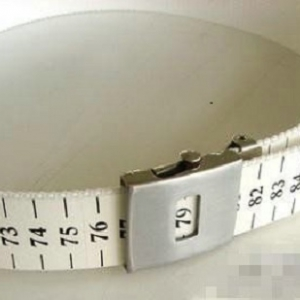

TU30.com
190斤胖妞跑步减重90斤 变身蛮腰长腿女神
2015-02-08 16:44:19大学入学前190斤，三年时间，体重成功减至100斤。曾经大胖妞成功逆袭女神成为健身教练。夏艳是安庆师范学院美术动画专业的一名学生，同时也是学校旁边一家健身会所的健身教练，因为身材高挑，长相清秀，经常被学员称 ...
和中国新首富合影是怎么样一种体验？
2015-02-08 01:42:58我也想~！

访问，又名刺杀金正恩
2015-02-07 19:09:00台湾飞机失事
2015-02-07 18:02:00
一电焊工开了个电焊铺，取了一个高大上的铺名:焊武帝
2015-02-07 18:01:00
妹子，你这样真的好吗
2015-02-07 18:00:00妹子，你这样真的好吗
很好看的电影，狂怒
2015-02-07 02:07:00很好看的电影，狂怒
唐朝并非“满宫大胖子” 初唐美女曾很“骨感”
2015-02-07 02:03:34《步辇图》 资料图本文摘自：中新网，作者：康少琼，原题为：《唐朝并非“满宫大胖子” 初唐美女曾很“骨感”》《武媚娘传奇》的槽点众多，比如说众多观众本着一个“唐朝以胖为美”的原则，纷纷吐槽说：说好的胖呢？ ...
过年了，准备这个腰带，神器啊
2015-02-07 01:30:16过年了，准备这个腰带，神器啊，O(∩_∩)O~

做火车回家的小心了
2015-02-06 17:20:51特别是普通火车的O(∩_∩)O
共2页，第1页